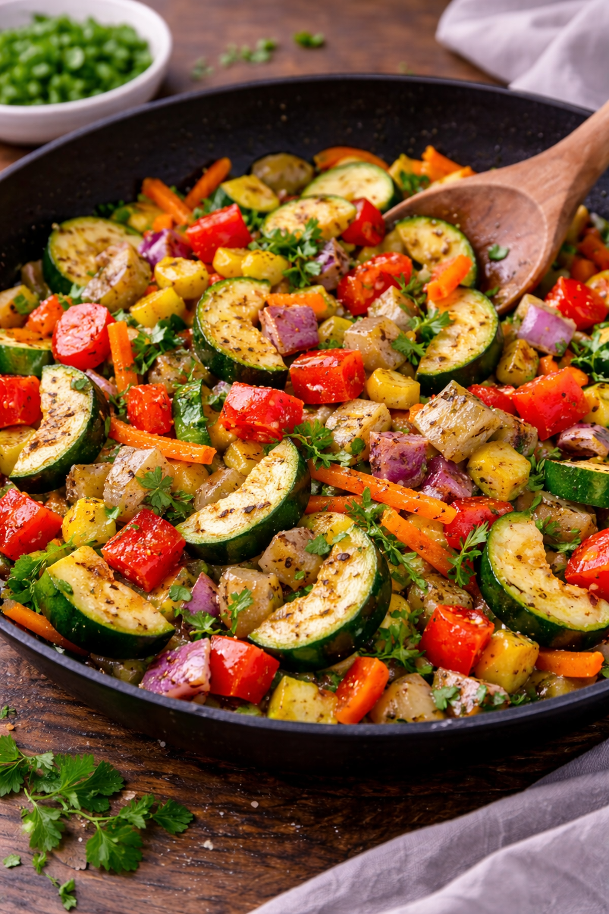

Pourquoi faire une poêlée de légumes express ?
- ✅ Recette rapide en moins de 20 minutes
- ✅ Repas sain et léger
- ✅ Idéal en accompagnement ou plat végétarien
- ✅ Parfait pour utiliser les légumes du frigo
Ingrédients (2 personnes)
Nombre de personnes :
2 personnes
Les quantités s’ajustent automatiquement.
Préparation (15 minutes)
- Lave et coupe les légumes en petits morceaux.
- Chauffe l’huile d’olive dans une grande poêle.
- Fais revenir l’oignon et l’ail 1 minute.
- Ajoute les légumes et fais sauter 8 à 10 minutes à feu moyen-vif.
- Sale, poivre et mélange régulièrement.
- Serre chaud en accompagnement ou en plat principal.
Astuces pour une poêlée encore meilleure
- 🔥 Cuisson rapide à feu vif pour garder du croquant.
- 🌿 Ajoute des herbes fraîches (persil, basilic).
- 🧀 Ajoute un peu de parmesan ou feta à la fin.
- 🥚 Ajoute un œuf ou du tofu pour un repas complet.
Variantes rapides
- Poêlée légumes + poulet
- Poêlée asiatique (sauce soja + graines de sésame)
- Version méditerranéenne (olives + tomates)
- Version curry (épices + lait de coco)
FAQ – Poêlée de légumes express
Peut-on utiliser des légumes surgelés ?
Oui, directement à la poêle sans décongélation préalable.
Combien de temps se conserve-t-elle ?
2 à 3 jours au réfrigérateur dans un récipient hermétique.
Peut-on en faire un plat principal ?
Oui, ajoute du riz, des pâtes ou une source de protéines.
À lire aussi
Omelette rapide du soir |
Salade thon maïs |
Recettes rapides faciles
: 25 idées.